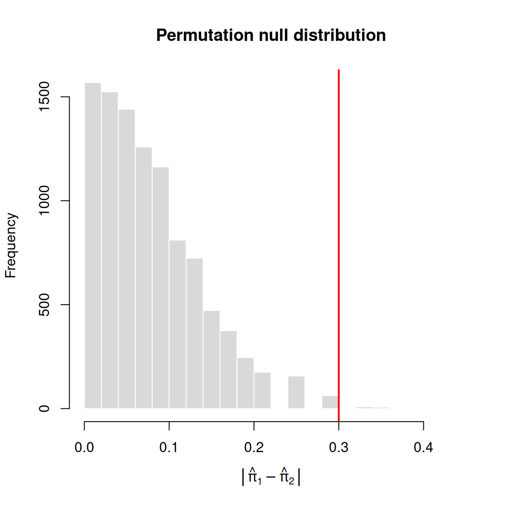

Permutation p-value is: 0.0047 We’ve seen several ways to create tests. We’re going to look at a particular setting in which we measure two categorical variables and go through what some of these tests would look like there and how they relate.
At its most basic, we will have recorded data in the form:
| sample | X | Y |
|---|---|---|
| 1 | 1 | 1 |
| 2 | 0 | 1 |
| 3 | 1 | 1 |
| 4 | 0 | 0 |
| … | … | … |
For example, this might be
| sample | Drug Treatment | Outcome |
|---|---|---|
| patient 1 | Treatment A | Recovery |
| patient 2 | Treatment B | Recovery |
| patient 3 | Treatment A | Recovery |
| patient 4 | Treatment B | Relapse |
| … | … | … |
This looks like our regression setup, where we have pairs \((X_i,Y_i)\), with both \(X\) and \(Y\) categorical.
We’ve discussed logistic regression for binary \(Y\) and we’ve discussed simple regression for binary predictors \(X\). So clearly one option for analyzing this data is to just combine these two: do logistic regression with a categorical \(X\). We would be asking how the probability of recovery depends on whether the patient had treatment \(A\) or \(B\).
A natural hypothesis test would be test whether \(\beta_1=0\) in our logistic regression model.
Compare proportions
We could also consider that our \(X\) variable defines two groups: Treatment A and Treatment B. We could ask if these two groups have different means. This leads us to tests of equality of proportions, \[H_0:\pi_1=\pi_2\]
Notice that \((1-\pi_1)-(1-\pi_2)=\pi_2-\pi_1\), so it doesn’t matter if you test the probability of recovery or the probability of relapse. Another way to say this is that it doesn’t matter which outcome you assign to the value \(1\) versus \(0\).
I have shifted to notation to calling our two groups to be groups 1 and groups 2, rather than \(X\) and \(Y\) to make it less confusing to go between thinking about regression and thinking about comparing two groups.
Contingency Tables
When you have two categorical variables, their relationship is often summarized by a contingency table. Contingency tables are tables of counts that basically look something like this:
| Recovery | Relapse | |
|---|---|---|
| Treatment A | 36 | 24 |
| Treatment B | 12 | 28 |
This is often called a 2x2 table because of its dimensions.
Comparisons of proportions in two groups can be described by a contingency table, where the \(\hat\pi_1\) and \(\hat\pi_2\) are just the row values divided by their row totals (or columns, depending on what you put in rows or columns).
| Recovery | Relapse | Total | \(\hat\pi\) | |
|---|---|---|---|---|
| Treatment A | 36 | 24 | 60 | 0.6 |
| Treatment B | 12 | 28 | 40 | 0.3 |
You can have more than just 2 categories, and you will often see contingency tables that report the totals as well:
| Car | Bus | Bike | Walk | Total | |
|---|---|---|---|---|---|
| Under 30 | 24 | 30 | 28 | 18 | 100 |
| 30 to 49 | 61 | 25 | 16 | 13 | 115 |
| 50 and over | 40 | 22 | 6 | 17 | 85 |
| Total | 125 | 77 | 50 | 48 | 300 |
This might be called a 3x4 contingency table to indicate its dimensions. It is still two categorical variables, but each variable can take on different numbers of categories.
How would the above contingency table look like as raw data, i.e. as a data.frame?
We will often label the elements of the contingency table,
| Value 1 | Value 2 | Total | |
|---|---|---|---|
| Value A | \(Z_{11}\) | \(Z_{12}\) | \(Z_{1+}\) |
| Value B | \(Z_{21}\) | \(Z_{22}\) | \(Z_{2+}\) |
| Total | \(Z_{+1}\) | \(Z_{+2}\) | \(Z_{++}\) |
where \(Z_{i+}=\sum_{j}Z_{ij}\) and \(Z_{+j}=\sum_{i}Z_{ij}\), i.e., the row and column totals, respectively.
Clearly this notation can also be extended beyond 2x2 tables.
The main book Agresti and Kateri (2021) uses \(y_{ij}\), \(y_{+j}\), \(y_{i+}\), and Rice (2006) uses \(N_{ij}\), \(n_{\cdot j}\), and \(n_{i\cdot}\). Variants of these are all equivalent and common. We have gone with \(Z\) to avoid confusion with the actual binary variables \(X\) and \(Y\), and to avoid getting mixed up with \(n\) and \(N\), which are often used for sample size (while \(n_{\cdot j}\) and \(n_{i\cdot}\) are clearly related to sample size, what is considered your “sample size” can be complicated depending on the design of your data, as we will discuss below).
Suppose we have two groups, and we want to compare their means. If the variable we are measuring is binary, then we are comparing their proportions, and we can state the null as \[H_0:\pi_1=\pi_2\]
We already have seen that we can use either the Wald test for this purpose based on \(|\hat\pi_1-\hat\pi_2|\) and its standard error estimate, \[T_{Wald}=\frac{|\hat\pi_1-\hat\pi_2|}{\sqrt{\dfrac{\hat\pi_1(1-\hat\pi_1)}{n_1}+\dfrac{\hat\pi_2(1-\hat\pi_2)}{n_2}}}.\] We can also use a score statistic that simplifies to \[T_{Score}=\frac{|\hat\pi_1-\hat\pi_2|}{\sqrt{\hat\pi_{0}(1-\hat\pi_{0})\left(\dfrac{1}{n_1}+\dfrac{1}{n_2}\right)}},\] where \(\hat\pi_{0}\) is the pooled estimate of the proportion, assuming the two groups share the same proportion, \[\hat\pi_{0}=\frac{n_1\hat\pi_1+n_2\hat\pi_2}{n_1+n_2}.\] Then our denominator is our estimate of the standard error of our difference if we pooled the data together.
For large samples, both are approximately \(N(0,1)\) under \(H_0\), so the two-sided p-value is \(P(|Z|\geq t_{obs})=2\left[1-\Phi(t_{obs})\right]\) for \(Z\sim N(0,1)\).
Notice again that the score statistic simplifies to using the estimate of the shared \(\pi\) under the null for the standard error. In other words, using the pooled estimate where we combine the data into a single group and estimate their shared \(\pi\). This would be our estimate of \(\pi_1\) and \(\pi_2\) if the null were true. So it shares similarities in logic to the likelihood.
Recall, however, that the score statistic is actually based on the gradient of the likelihood and simplifies to the forms we have shown. We haven’t discussed the Fisher information matrix for multiple parameters, which is the extension of the Fisher information to a matrix. We would formally have to use a matrix multiplication involving the Fisher information matrix to define the score statistic, and we are only giving the simplified equation above.
Example 1 Here \(n_1=60\), \(n_2=40\), and \(\hat\pi_1-\hat\pi_2=0.6-0.3=0.3\). For the Wald test, \[\widehat{SE}=\sqrt{\frac{0.6(0.4)}{60}+\frac{0.3(0.7)}{40}}=\sqrt{0.0040+0.00525}=0.0962, \qquad t_{obs}=\frac{0.3}{0.0962}=3.12,\] giving a p-value of \(2\left[1-\Phi(3.12)\right]=0.0018\).
For the Score test, the pooled proportion is \(\hat\pi_0=48/100=0.48\), so \[SE_0=\sqrt{0.48(0.52)\left(\frac{1}{60}+\frac{1}{40}\right)}=\sqrt{0.0104}=0.1020, \qquad t_{obs}=\frac{0.3}{0.1020}=2.94,\] giving a p-value of \(2\left[1-\Phi(2.94)\right]=0.0033\).
The two tests use the same numerator, but the Wald test has a smaller standard error here, because \(\hat\pi_1(1-\hat\pi_1)\) and \(\hat\pi_2(1-\hat\pi_2)\) are smaller than the pooled \(\hat\pi_0(1-\hat\pi_0)\), so its statistic is larger and its p-value is smaller.
We’ve briefly discussed during our development of the delta method that instead of considering the proportion \(\pi\) as our parameter of interest, we can consider the odds \(\pi/(1-\pi)\) or, more commonly, the log-odds, \[\log\frac{\pi}{1-\pi}.\] We can ask what if we consider the difference in the log-odds instead of the difference in the proportions as the base of our test statistic, \[\hat{\Delta}_{odds}=\log\frac{\hat\pi_1}{1-\hat\pi_1}-\log\frac{\hat\pi_2}{1-\hat\pi_2} =\log\left(\frac{\hat\pi_1}{1-\hat\pi_1}\frac{1-\hat\pi_2}{\hat\pi_2}\right).\]
Our null hypothesis of equal proportions will imply that the difference in the log-odds is 0: \[\pi_1=\pi_2 \Rightarrow H_0: \Delta_{odds}=0.\] We can use the delta method to get the asymptotic standard error of this \(\hat{\Delta}_{odds}\), and create a Wald test: \[T_{Wald}= \frac{|\hat{\Delta}_{odds}-0|}{\hat{SE}(\hat{\Delta}_{odds})}.\] The score statistic, unlike the Wald statistic, is invariant to transformations of our parameters1, so we still get \[T_{Score}=\frac{|\hat\pi_1-\hat\pi_2|}{\sqrt{\hat\pi_0(1-\hat\pi_0)\left(\dfrac{1}{n_1}+\dfrac{1}{n_2}\right)}}.\]
For likelihood ratio test, we need to work out the likelihood ratio statistic. We assume our group 1 data \(Y_{1,1},\ldots,Y_{1,n_1}\) are Bernoulli(\(\pi_1\)) and our group 2 data \(Y_{2,1},\ldots,Y_{2,n_2}\) are Bernoulli(\(\pi_2\)).
Our parameter is \(\theta=(\pi_1,\pi_2)\) and our hypothesis spaces are \[\omega_0=\{(\pi_1,\pi_2):\pi_1=\pi_2\}\quad\text{versus}\quad \omega_a=\{(\pi_1,\pi_2):\pi_1\neq \pi_2\}.\]
Compute the MLEs. Since we are assuming that the observations are i.i.d. Bernoulli in each group, the log-likelihood simplifies to the sum of the log-likelihoods of each group, which we’ve calculated many times before: \[\begin{aligned} \ell(\pi_1,\pi_2)&=\pi_1^{\sum_i Y_{1,i}}(1-\pi_1)^{n_1-\sum_i Y_{1,i}}\;\pi_2^{\sum_i Y_{2,i}}(1-\pi_2)^{n_2-\sum_i Y_{2,i}},\\ L(\pi_1,\pi_2)&=\sum_i Y_{1,i}\log\pi_1+(n_1-\sum_i Y_{1,i})\log(1-\pi_1)+\sum_i Y_{2,i}\log\pi_2+(n_2-\sum_i Y_{2,i})\log(1-\pi_2). \end{aligned}\]
We know the likelihood without any constraints is maximized by the MLE, \[\hat\pi_1=\frac{\sum_i Y_{1,i}}{n_1},\qquad \hat\pi_2=\frac{\sum_i Y_{2,i}}{n_2}.\] Under the null, the two groups have the same \(\pi_1=\pi_2=\pi\) value, so their log-likelihood is \[ \begin{aligned} L(\pi,\pi)&=\sum_i Y_{1,i}\log\pi+(n_1-\sum_i Y_{1,i})\log(1-\pi)+\sum_i Y_{2,i}\log\pi+(n_2-\sum_i Y_{2,i})\log(1-\pi)\\ &=\left(\sum_i Y_{1,i}+\sum_i Y_{2,i}\right)\log\pi+\left(n_1+n_2-\sum_i Y_{1,i}-\sum_i Y_{2,i}\right)\log(1-\pi). \end{aligned} \] This is the likelihood if all the data was combined together and treated as if it was i.i.d. from a Bernoulli(\(\pi\)) distribution. So naturally, the value that maximizes it will be the MLE of a sample of Bernoulli, \[\hat\pi_0=\frac{\sum_i Y_{1,i}+\sum_i Y_{2,i}}{n_1+n_2},\] which is the pooled proportion (the same one we used in the Score test).
Compute \(\Lambda\). Now we plug these into our equation for our test statistic, \[\Lambda=2\left[L(\hat\pi_1,\hat\pi_2)-L(\hat\pi_0,\hat\pi_0)\right].\]
We can group the terms in the two likelihoods by which group the data came from, \[ \begin{aligned} \Lambda&=2\Bigl[\sum_i Y_{1,i}\log\hat\pi_1+(n_1-\sum_i Y_{1,i})\log(1-\hat\pi_1)\\ &\qquad\quad+\sum_i Y_{2,i}\log\hat\pi_2+(n_2-\sum_i Y_{2,i})\log(1-\hat\pi_2)\Bigr]\\ &\quad-2\Bigl[\sum_i Y_{1,i}\log\hat\pi_0+(n_1-\sum_i Y_{1,i})\log(1-\hat\pi_0)\\ &\qquad\quad+\sum_i Y_{2,i}\log\hat\pi_0+(n_2-\sum_i Y_{2,i})\log(1-\hat\pi_0)\Bigr]\\ &=2\Bigl[\sum_i Y_{1,i}\log\frac{\hat\pi_1}{\hat\pi_0}+(n_1-\sum_i Y_{1,i})\log\frac{1-\hat\pi_1}{1-\hat\pi_0}\\ &\qquad\quad+\sum_i Y_{2,i}\log\frac{\hat\pi_2}{\hat\pi_0}+(n_2-\sum_i Y_{2,i})\log\frac{1-\hat\pi_2}{1-\hat\pi_0}\Bigr]. \end{aligned}\]
Null distribution. \(\dim(\Omega)=2\) and \(\dim(\omega_0)=1\), so we have that under \(H_0\) \[\Lambda\overset{D}{\rightarrow}\chi^2_1\]
So we will reject when \(\Lambda > \mathtt{qchisq(1-alpha,df=1)}\) and the p-value will be \[\text{p-value}= P_{H_0}(\Lambda \geq \lambda_{obs})=\mathtt{1-pchisq(\lambda_{obs},df=1)}.\]
Example 2 For our data, \(n_1=60\), \(n_2=40\), \(\hat\pi_1=0.6\), \(\hat\pi_2=0.3\) and \(\hat\pi_0=0.48\), so \[\Lambda=2\left[36\log\frac{0.6}{0.48}+24\log\frac{0.4}{0.52}+12\log\frac{0.3}{0.48}+28\log\frac{0.7}{0.52}\right]=8.84,\] and the p-value is \(P(\chi^2_1\geq 8.84)=0.0029\).
In general, we cannot write down the solutions for logistic regression, but in this case we can! Recall that in the logistic regression model, our variable \(X\) is binary, meaning it tells us which group an observation is in: \(X_i=1\) if observation \(i\) is in group 1 and \(X_i=0\) if it is in group 2. \(Y\) is also binary, since it’s logistic regression.
Then our logistic regression model is: \[ \begin{aligned} P(Y_i=1\mid X=x_i)&= \dfrac{e^{\beta_0+\beta_1x_i}}{1+e^{\beta_0+\beta_1x_i}}\\ \Rightarrow \log\frac{P(Y_i=1\mid X=x_i)}{1-P(Y_i=1\mid X=x_i)}& =\beta_0+\beta_1x_i. \end{aligned} \]
Just like in our regression example, since our \(X\) is categorical, this model simplifies to two cases.
If \(X_i=0\), meaning that the sample is in group 2, then this model is
\[ \log\frac{P(Y_i=1\mid X_i=0)}{1-P(Y_i=1\mid X_i=0)}=\log\frac{\pi_2}{1-\pi_2} =\beta_0, \] so \(\beta_0\) is the log-odds of \(\pi_2\).
If \(X_i=1\), meaning that the sample is in group 1, then this model is \[ \begin{aligned} \log\frac{P(Y_i=1\mid X_i=1)}{1-P(Y_i=1\mid X_i=1)}& =\beta_0+\beta_1\\ \Rightarrow \log\frac{\pi_1}{1-\pi_1}&=\log\frac{\pi_2}{1-\pi_2}+\beta_1\\ \Rightarrow \log\frac{\pi_1}{1-\pi_1}-\log\frac{\pi_2}{1-\pi_2}&=\beta_1 \end{aligned} \]
So \(\beta_1\) is the difference in the log-odds, which we called \(\Delta_{odds}\) from before. Moreover, our MLEs for logistic regression are the same,2 \[\hat{\beta}_1=\hat{\Delta}_{odds},\quad \hat\beta_0=\log\frac{\hat\pi_2}{1-\hat\pi_2}.\]
So in fact, any tests about \(\beta_1\) are equivalent to tests about the difference in the log-odds. Our standard test in regression is \[H_0:\beta_1=0\] and it implies that \(X\) doesn’t predict the probability that \(Y_i=1\). In this setting, where \(X\) is binary, it means which group you are in doesn’t affect the probability that \(Y_i=1\), i.e. \(\pi_1=\pi_2\) or equivalently the log-odds \(\Delta_{odds}=0\).3
Tests of \(\beta_1\). Because the models and the hypothesis are the same, the possible tests of \(\beta_1=0\) are the same as above:
All of the previous tests are asymptotic tests. What if we do not have a large sample?
Suppose I wanted to run a permutation test. Our data are really 100 patients, each with a group label (group 1 or group 2) and a binary outcome (recovery or relapse). Under \(H_0:\pi_1=\pi_2\), the outcome doesn’t depend on the group label. So just like the permutation tests we saw before, if \(H_0\) is true then any shuffling of the labels among the patients is equally likely. A permutation test would be:
| sample | Drug Treatment | Outcome |
|---|---|---|
| patient 1 | Treatment A | Recovery |
| patient 2 | Treatment B | Recovery |
| patient 3 | Treatment A | Recovery |
| patient 4 | Treatment B | Relapse |
| … | … | … |
We will randomly permute the values of the treatment, so the assignment of patient to treatment gets permuted.4 3. For each shuffled data set, recompute the statistic. 4. The p-value is the proportion of permutations that give a statistic at least as large as \(t_{obs}\).
Here is the histogram of the permutation null distribution with the observed value marked in red:

Permutation p-value is: 0.0047 In fact, the comparison of two proportions is like the example of rank statistics—since I know my data can only be zeros and ones, there are simplifications, and I can calculate the permutation distribution exactly. It’s often easier to see this if consider our data when summarized as a contingency table.
| Recovery | Relapse | Total | |
|---|---|---|---|
| Treatment A | \(Z_{11}=36\) | 24 | 60 |
| Treatment B | 12 | 28 | 40 |
| Total | 48 | 52 | 100 |
Any statistic is a function of the values \((Z_{11},Z_{12},Z_{21},Z_{22})\), so understanding the joint distribution of these four values under the permutation null hypothesis will give us the distribution of any possible statistic.
When I permute my data, as described above, I will still get the same number of patients in Treatment A and B, so my row totals stay the same. I also have the same number of recoveries and relapses so my column totals stay the same. So I will be changing the values of my \(Z_{ij}\) but with the constraints that the row and column margins are the same. So a permutation null hypothesis results in a distribution of the values \((Z_{11},Z_{12},Z_{21},Z_{22})\), under the constraint of fixed row and column sums being what I observed on my data—it’s a conditional distribution.
The next insight is that if the row and column totals stay the same, and you tell me \(Z_{11}\), then I can tell you all the other values of the table (\(Z_{12},Z_{21},Z_{22}\)) by subtraction of \(Z_{11}\) from the appropriate row or column total. So from our previous logic, for this conditional distribution, any statistic can be written as just a function of \(Z_{11}\).
So for example, \[\hat\pi_1-\hat\pi_2=\frac{Z_{11}}{60}-\frac{48-Z_{11}}{40}.\] So to get the permutation distribution of a statistic, all we need is the distribution of \(Z_{11}\) across our permutations. This we can calculate exactly based on the hypergeometric distribution.
\[Z_{11} \sim \mathrm{HG}(w=Z_{+1},\ b=Z_{+2},\ n=Z_{1+})\]
Explanation of hypergeometric distribution
We can write this as a probability problem of white and black balls in an urn (probability always involves urns!), and we take a fixed sample \(N\) of them, and consider how many balls will turn up white. In this case, we have an urn with \(Z_{++}\) balls/patients, with \(Z_{+1}\) of them white/recovery and \(Z_{+2}\) of them black/relapse. I.e., we assume that under the null the total number of recoveries and relapses among these patients would be the same.
We are going to sample \(N=Z_{1+}\) from this urn corresponding to the size of our Treatment A group and count the number of recoveries \(Z_{11}\) (white balls) we get. This corresponds to our random assignment of A to our patients in our permutation test.
Then the distribution of \(Z_{11}\) under this setup is the hypergeometric distribution, \[Z_{11} \sim \mathrm{HG}(w=Z_{+1},\ b=Z_{+2},\ n=Z_{1+})\] and \[ P(Z_{11} = k) = \frac{\binom{Z_{+1}}{k}\binom{Z_{+2}}{Z_{1+}-k}}{\binom{Z_{++}}{Z_{1+}}} \]
If we let \(k = z_{11}\), the observed value of \(Z_{11}\), we get (note that \(z_{11}+z_{12} = Z_{1+}\)): \[ P(Z_{11} = z_{11}) = \frac{\binom{Z_{+1}}{z_{11}}\binom{Z_{+2}}{z_{12}}}{\binom{Z_{++}}{Z_{1+}}} \]
Since we know our statistic is a function of \(Z_{11}\), this will also give us our probabilities for any value of our statistic (just like in our coin flip example).
Example 3 Since \(|\hat\pi_1-\hat\pi_2|\) is proportional to \(|Z_{11}-28.8|\), a statistic at least as extreme as ours means \(|Z_{11}-28.8|\geq 7.2\), i.e. \(Z_{11}\geq 36\) or \(Z_{11}\leq 21\), so \[\begin{aligned} \text{p-value}&=P_{H_0}(Z_{11}\geq 36)+P_{H_0}(Z_{11}\leq 21)\\ &=0.0029+0.0013=0.0042. \end{aligned} \] In general, we compute the value of the statistic for each possible \(k\), and add up the probabilities \(P_{H_0}(Z_{11}=k)\) based on the hypergeometric distribution of all the \(k\) whose statistic is at least \(t_{obs}\):
Hypergeometric p-value for difference in proportions:[1] 0.0042When we sampled from permutations, we were approximating this exact number, and we got a p-value of 0.0047. So we see that it was a reasonable approximation, and as the number of permutations \(B\) we choose to sample gets larger, it will approach this exact answer—only of course we don’t need to approximate it since we have the exact distribution.
The most well-known exact test for comparing proportions is known as Fisher’s Exact Test. It is in fact just a permutation test that uses the statistic \[T=-P_{H_0}(Z_{11}=z_{11}),\] where \(z_{11}\) is the observed value of the top-left count of the table and can be calculated using the hypergeometric distribution.
This is similar to the likelihood ratio, where we calculate the probability of our observed data under the null and use it as our test statistic. A contingency table with a small probability is evidence against the null, so by taking the negative we have that large values of \(T\) are evidence against \(H_0\). The p-value is the sum of the probabilities of all tables that are no more likely than the one we observed, \[\text{p-value}=\sum_{k:\ P_{H_0}(Z_{11}=k)\ \leq\ P_{H_0}(Z_{11}=z_{11})}P_{H_0}(Z_{11}=k).\] If all of the expected counts in the table grow, the hypergeometric distribution of \(Z_{11}\) is approximately normal, so there are also large-sample approximations for Fisher’s Exact Test.
In our data example, the two p-values are exactly the same as using the difference in the proportions. However, the two statistics don’t always agree since they measure the size of the effect differently. In general, it is best to use Fisher’s Exact Test since it widely known and understood, unless you are particularly interested in the value of another test statistic.
Example 4 Here is a smaller data set where the permutation p-values do differ. Suppose that now Treatment A is given to only 10 patients and Treatment B to 30, with the following results:
| Recovery | Relapse | Total | |
|---|---|---|---|
| Treatment A | 4 | 6 | 10 |
| Treatment B | 4 | 26 | 30 |
| Total | 8 | 32 | 40 |
So \(\hat\pi_1=0.4\) and \(\hat\pi_2=0.133\). Our tests don’t agree here:
| Test | Statistic | p-value |
|---|---|---|
| Permutation | \(\lvert\hat\pi_1-\hat\pi_2\rvert\) | \(0.166\) |
| Permutation | \(\lvert\hat\Delta_{odds}\rvert\) | \(0.166\) |
| Permutation (Fisher’s Exact Test) | \(T=-P_{H_0}(Z_{11}=z_{11})\) | \(0.0894\) |
The reason they don’t agree relates to using the absolute value to determine which differences in the tail are equivalent (i.e., if you have a large negative or large positive value of this quantity you are equally extreme). Fisher’s Exact Test considers what is extreme in the two directions away from the null differently.
The table below summarizes the tests we discussed above and their results when applied to our example data (\(n_1=60\) with 36 recoveries, \(n_2=40\) with 12 recoveries).
| Test | Statistic \(T\) | Observed value | p-value | Also known as |
|---|---|---|---|---|
| Wald | \(\dfrac{\lvert \hat\pi_1-\hat\pi_2\rvert}{\widehat{SE}}\) | 3.12 | 0.0018 | |
| Wald | \(\dfrac{\lvert \hat\Delta_{odds}\rvert}{\widehat{SE}(\hat\Delta_{odds})}\) | 2.89 | 0.0039 | Z-test of \(\lvert Z\rvert=\lvert\hat\beta_1\rvert/\widehat{SE}(\hat\beta_1)\) |
| Score | \(\dfrac{\lvert \hat\pi_1-\hat\pi_2\rvert}{SE_0}\) | 2.94 | 0.0033 | Score Test of Logistic |
| Likelihood Ratio | \(\Lambda\) | 8.84 | 0.0029 | LRT of Logistic |
| Permutation | \(\lvert \hat\pi_1-\hat\pi_2\rvert\) | 0.30 | 0.0042 | |
| \(\lvert \hat\Delta_{odds}\rvert\) | 1.25 | 0.0042 | ||
| \(-P_{H_0}(Z_{11}=z_{11})\) | \(-0.0022\) | 0.0042 | Fisher’s Exact Test |
The score statistic is based on our derivative of our likelihood, once we rewrite our likelihood in terms of the log-odds, instead of in terms of \(\pi\).↩︎
We can work this out by hand, but we can also see this because of the invariance of the MLE.↩︎
The equivalence is special to a single categorical \(X\) predictor. With more predictors or a continuous \(X\), there is no closed form for \(\hat\beta\).↩︎
We could equivalently permute the outcomes.↩︎